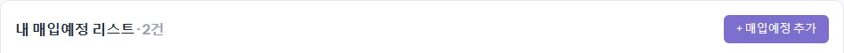
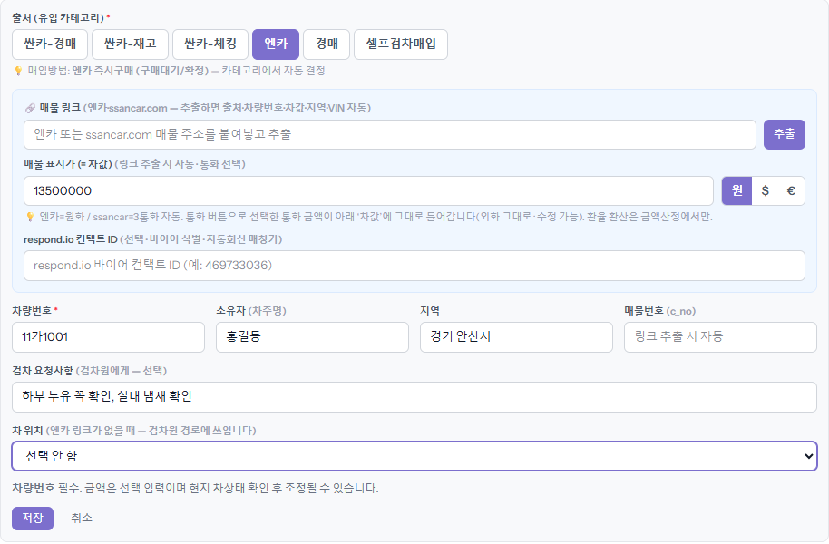
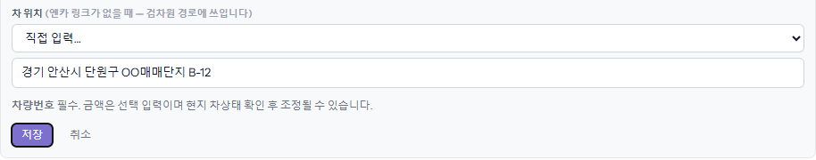
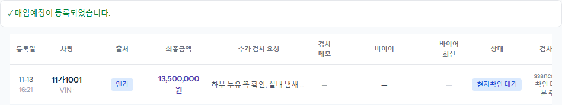

살 차가 생기면 맨 먼저 하는 일입니다. 매입예정에 올리면 검차 목록에 들어가고, 검차가 끝나면 바이어에게 보낼 수 있습니다.
차량번호만 있으면 저장되고, 나머지는 나중에 채워도 됩니다.
1단계
「매입예정(Invoice)」 화면에서 [+ 매입예정 추가]를 누릅니다
목록 오른쪽 위 보라색 버튼입니다. 누르면 목록 위에 입력 칸이 펼쳐집니다.

2단계
출처를 고르고 차 정보를 적습니다
매물 링크가 있으면 「매물 링크」 칸에 엔카나 ssancar.com 주소를 붙여 넣고 [추출]을 누릅니다. 출처·차량번호·차값·지역이 자동으로 채워집니다. 링크가 없으면 아래 칸을 직접 채웁니다.
- 「출처」 — 싼카-경매·싼카-재고·싼카-체킹·엔카·경매·셀프검차매입 가운데 하나. 링크를 추출하면 저절로 골라집니다.
- 「매물 표시가 (= 차값)」 — 매물에 적힌 값. 오른쪽 원·$·€ 로 통화를 고릅니다.
- 「차량번호」 — 꼭 적어야 합니다. 같은 차가 이미 있으면 저장이 막힙니다.
- 「소유자」 — 차주 이름. 몰라도 됩니다.
- 「지역」 — 「안산」처럼 쳐 넣으면 「경기 안산시」 같은 정식 이름이 아래에 뜹니다. 검차원 배정이 이 값으로 됩니다.
- 「검차 요청사항」 — 검차원에게 남기는 말. 검차원 화면에 「추가 검사 요청」으로 보입니다.

3단계
링크가 없으면 「차 위치」를 정하고 [저장]을 누릅니다
엔카 링크가 없는 차는 검차원이 어디로 가야 할지 모릅니다. 「차 위치」에서 매매단지를 고르거나, 목록에 없으면 「직접 입력…」을 골라 주소를 적습니다. 이 주소로 검차원 방문 순서가 짜집니다.

4단계
목록 맨 위에 「현지확인 대기」로 올라갑니다
「매입예정이 등록되었습니다.」가 뜨고 차가 목록 맨 위에 생깁니다. 상태는 「현지확인 대기」 — 검차를 기다리는 중이라는 뜻입니다. 오른쪽 「검차상태」 칸에서 검차가 어디까지 왔는지 볼 수 있습니다(「검차 기다리기」 가이드).

알아 둘 것
- 「경매」 출처는 평일 오전 10시가 지나면 등록이 막힙니다(위쪽 빨간 띠 「경매 등록 마감됨」). 엔카는 언제든 됩니다.
- 직접 검차한 차는 출처를 「셀프검차매입」으로 고릅니다. 검차 단계를 건너뛰고 바로 「경매/구매」로 갑니다(「셀프검차매입」 가이드).
- 차량번호와 차대번호는 저장한 뒤에는 고칠 수 없습니다. 잘못 적었으면 지우고 다시 올립니다(「삭제와 재등록」 가이드).
- 목록의 차 줄을 누르면 오른쪽 창에서 나중에 내용을 고칠 수 있습니다.